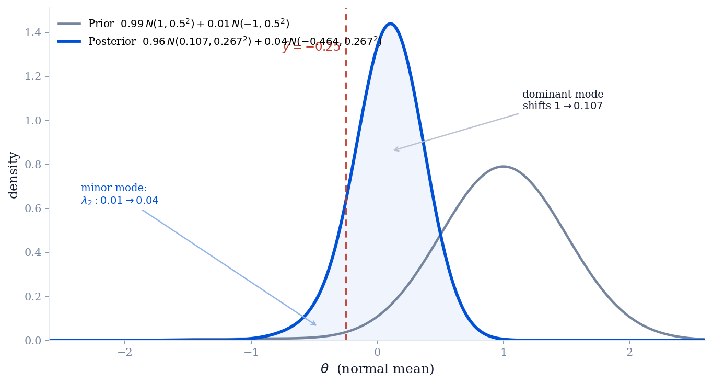

A finite mixture of conjugate priors is itself conjugate. The posterior stays a mixture of the same components—each updated by its own conjugate rule—while the mixing weights are re-weighted by how well each component predicts the data. We prove the general result, then build a bimodal normal-mean prior and watch both the component parameters and the mixing weights update.
Suppose the densities $p_m(\theta)$, $m = 1, \dots, M$, are each a conjugate prior for the sampling model $y \mid \theta$. Show that the class of finite mixture prior densities $$p(\theta) = \sum_{m=1}^{M} \lambda_m\, p_m(\theta), \qquad \lambda_m \ge 0, \quad \sum_{m=1}^{M} \lambda_m = 1,$$ is also a conjugate class. This extends the natural conjugate family to more flexible distributional forms.
As an example, use the mixture form to build a bimodal prior for a normal mean that is thought to be near $1$ (standard deviation $0.5$) but has a small probability of being near $-1$ (same standard deviation). The variance of each observation $y_1, \dots, y_{10}$ is known to be $1$, and their observed mean is $\bar{y} = -0.25$. Derive the posterior distribution for the mean and sketch both prior and posterior densities. Be careful: the prior and posterior mixture proportions are different.
Write Bayes' rule and substitute the mixture prior. Because the likelihood $p(y \mid \theta)$ does not depend on the mixing index, it passes inside the sum:
Now invoke conjugacy one component at a time. For prior $p_m$ alone, conjugacy means the posterior $p_m(\theta \mid y)$ lies in the same family, and Bayes' rule for that single component reads
where $p_m(y)$ is the prior predictive (marginal likelihood) of the data under component $m$. Solving for the bracketed product, $p_m(\theta)\,p(y \mid \theta) = p_m(y)\, p_m(\theta \mid y)$, and substituting back:
Each $p_m(\theta \mid y)$ is a proper density in the original conjugate family (by conjugacy), and the new weights $\lambda_m'$ are nonnegative and sum to $1$ by construction. So the posterior is again a finite mixture of conjugate forms—the mixture class is closed under updating, i.e. conjugate. $\blacksquare$
The map $\lambda_m \to \lambda_m'$ multiplies each prior weight by $p_m(y)$, the marginal probability the data assign to that component, then renormalizes. Components that predict the observed data well are up-weighted; components that predict it poorly are down-weighted. This is exactly Bayes' rule operating at the level of the mixture labels: $\lambda_m' \propto \lambda_m\, p_m(y)$ is the posterior over "which component generated $\theta$."
The sampling model is normal with known variance. The sufficient statistic is the sample mean, and with $n = 10$ observations each of variance $\sigma^2 = 1$,
The normal prior is conjugate for a normal mean, so we take a two-component mixture of normals, each with standard deviation $0.5$ (variance $0.25$). "Near $1$" is the main belief; "small probability near $-1$" is the minor component:
(The choice $0.99/0.01$ formalizes "small probability"; any small $\lambda_2$ gives the same qualitative behavior.) This prior is sharply unimodal to the eye—the $-1$ bump carries only $1\%$ of the mass.
For a normal mean, precisions add and the posterior mean is the precision-weighted average of prior mean and data. The prior precision is $1/0.5^2 = 4$; the data precision is $n/\sigma^2 = 10$; so every component's posterior precision is $4 + 10 = 14$, giving a common posterior variance $1/14$ (standard deviation $\approx 0.267$):
Both modes are pulled toward $\bar{y} = -0.25$ and both sharpen from sd $0.5$ to sd $0.267$.
By the general result, $\lambda_m' \propto \lambda_m\, p_m(\bar{y})$, where $p_m(\bar{y})$ is the prior predictive of $\bar{y}$ under component $m$. Marginalizing $\theta$ out adds the two independent variances—prior variance plus sampling variance:
Evaluating each predictive density at $\bar{y} = -0.25$ (the common normalizing constant $1/\sqrt{2\pi \cdot 0.35}$ cancels in the ratio, leaving only the exponential kernels):
| Component $m$ | center $\mu_m$ | $(\bar{y}-\mu_m)^2$ | $p_m(\bar{y}) \propto e^{-(\bar{y}-\mu_m)^2/0.7}$ | prior $\lambda_m$ | $\lambda_m\, p_m(\bar{y})$ | posterior $\lambda_m'$ |
|---|---|---|---|---|---|---|
| 1 (near $+1$) | $+1$ | $1.5625$ | $0.0724$ | $0.99$ | $0.0716$ | $\approx 0.96$ |
| 2 (near $-1$) | $-1$ | $0.5625$ | $0.3019$ | $0.01$ | $0.0030$ | $\approx 0.04$ |
The data at $\bar{y} = -0.25$ predict better under the $-1$ component ($p_2 \approx 4.2\, p_1$), so $\lambda_2$ quadruples from $0.01$ to $\approx 0.04$. But the prior odds were $99{:}1$, so component 1 still dominates: the data nudge the mixture toward $-1$ without overturning it. This is the promised subtlety—the mixing proportions change, and they move opposite to the prior's dominance.

Three effects are visible at once, and they are exactly the two mechanisms the general result predicts: the component parameters update (modes shift toward the data and sharpen), and the mixing weights update (the data-favored component gains mass).
A mixture of conjugate priors is conjugate because updating factors into two conjugate operations: each component absorbs the data through its own closed-form rule, and the mixture labels absorb the data through $\lambda_m' \propto \lambda_m\, p_m(y)$. Neither operation leaves the family. The same construction works for any conjugate pair—beta mixtures for a binomial proportion, gamma mixtures for a Poisson rate, normal mixtures for a normal mean—buying multimodal, heavy-tailed, or skewed prior shapes while keeping every posterior computation in closed form. The lesson to carry forward: with a mixture prior, always ask both how each component moved and how the weights re-balanced; forgetting the second is the classic error this exercise is built to expose.